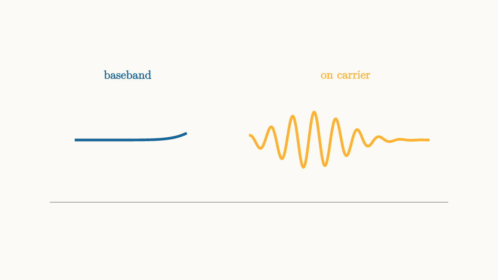

Carrier Frequency Moves The Signal
Pulse shaping creates a baseband signal. Baseband means the waveform is centered near zero frequency. That is natural for math and for many wired links, but radio systems need signals at carrier frequencies.
A carrier is a sinusoid:
Multiplying a baseband signal by this carrier shifts its spectrum up to frequencies near $f_c$. The information is still in the symbol waveform, but the physical signal now lives in a band that antennas, filters, and regulations can use.

source
background = [0.985, 0.98, 0.955, 1]
camera = Camera(4b)
mesh diagram = block {
. stroke{GRAY, 1} Line(start: [-3.2, -1.0, 0], end: [3.2, -1.0, 0])
. stroke{BLUE, 4} ExplicitFunc(|t| exp(-2.2 * t * t), [-2.8, -1.0, 160])
. stroke{ORANGE, 4} ExplicitFunc(|t| 0.45 * exp(-1.8 * (t - 1.0) * (t - 1.0)) * cos(18 * t), [0.0, 2.9, 240])
. center{[-1.95, 1.05, 0]} color{BLUE} Text("baseband", 0.68)
. center{[1.55, 1.05, 0]} color{ORANGE} Text("on carrier", 0.68)
}
"frequency shift"
play Fade(0.6)The simplest passband signal is
where $x(t)$ is the shaped PAM waveform. When $x(t)$ is positive, the carrier has one phase. When $x(t)$ is negative, the carrier is inverted. The receiver can multiply by a matching carrier and low-pass filter to recover the baseband signal.
Two dimensions from two carriers
A single cosine carrier gives one real dimension. Modern systems usually use two orthogonal carriers:
and
They are orthogonal over suitable symbol intervals, so they can carry independent components. The passband signal becomes
The $I$ and $Q$ signals are in-phase and quadrature components. Together they form a complex baseband signal:
This is how QPSK and QAM fit many constellation points into a radio channel. A point in the constellation chooses the values of $I$ and $Q$ for that symbol.
source
background = [0.985, 0.98, 0.955, 1]
camera = Camera(4b)
let DotAt = |pos, col| block {
. fill{lerp(WHITE, col, 0.32)} stroke{col, 2} center{pos} Circle(0.16)
}
"four phases"
mesh axes = block {
. stroke{GRAY, 1} Line(start: [-2.6, 0, 0], end: [2.6, 0, 0])
. stroke{GRAY, 1} Line(start: [0, -1.6, 0], end: [0, 1.6, 0])
. center{[2.35, -0.32, 0]} color{GRAY} Text("I", 0.62)
. center{[0.35, 1.35, 0]} color{GRAY} Text("Q", 0.62)
}
mesh points = [
DotAt(pos: [-1.1, -1.1, 0], col: BLUE),
DotAt(pos: [-1.1, 1.1, 0], col: BLUE),
DotAt(pos: [1.1, -1.1, 0], col: BLUE),
DotAt(pos: [1.1, 1.1, 0], col: BLUE)
]
mesh label = center{[0, 1.72, 0]} color{DARK_GRAY} Text("QPSK uses carrier phase", 0.62)
play Grow(0.8)
play Fade(0.4)
"denser constellation"
points = [
DotAt(pos: [-1.5, -1.0, 0], col: ORANGE),
DotAt(pos: [-0.5, -1.0, 0], col: ORANGE),
DotAt(pos: [0.5, -1.0, 0], col: ORANGE),
DotAt(pos: [1.5, -1.0, 0], col: ORANGE),
DotAt(pos: [-1.5, 1.0, 0], col: ORANGE),
DotAt(pos: [-0.5, 1.0, 0], col: ORANGE),
DotAt(pos: [0.5, 1.0, 0], col: ORANGE),
DotAt(pos: [1.5, 1.0, 0], col: ORANGE)
]
label = center{[0, 1.72, 0]} color{DARK_GRAY} Text("more points need cleaner reception", 0.62)
play Trans(1.0)
play Fade(0.3)Upconversion and downconversion
The transmitter shapes symbols at baseband, then upconverts them to the carrier. The receiver downconverts the passband signal back to baseband.
Downconversion sounds like reversing the multiplication, but it is delicate. The receiver's carrier oscillator must have nearly the same frequency and phase as the transmitter's carrier. If the receiver's oscillator is off by a little, the constellation rotates. If it is off by more, the rotation changes quickly over time.
This is why carrier synchronization is a central receiver task. The math of modulation assumes the receiver has a reference carrier. Real receivers have to recover one from the incoming signal.
Frequency is also an address
Carrier frequency does more than make antennas practical. It also separates users and services. One station occupies one band. Another station occupies a different band. Filters select the desired band and reject others.
That idea is frequency-division multiple access in its simplest form. Multiple access appears again in the final lesson, where frequency, time, codes, and scheduling all become ways to share a channel.
Carrier modulation is therefore a placement operation. Pulse shaping decides the baseband shape. The carrier decides where that shaped signal lives in the physical spectrum.